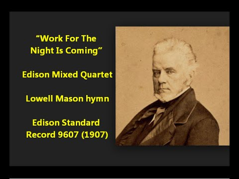
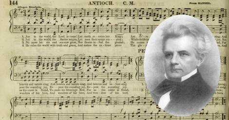

1763 Work for the Night Is Coming ����u�@�A�]���{
(Lowell Mason hymn)
|
|
�i����u�@�]���{�j
�ֶ��G�t�{�ֺq�A644 |
|
1 Work, for the night is coming;
Work through the morning hours;
Work while the dew is sparkling;
Work mid springing flowers;
Work when the day grows brighter;
Work in the glowing sun;
Work, for the night is coming,
When man's work is done.�@
2 Work, for the night is coming;;
Work through the sunny noon;
Fill brightest hours with labor;
Rest comes sure and soon.
Give every flying minute
Something to keep in store;
Work, for the night is coming,
When man works no more.�@
3 Work, for the night is coming,
Under the sunset skies;
While their bright tints are glowing,
Work, for daylight flies.
Work till the last beam fadeth,
Fadeth to shine no more;
Work, while the night is darkening,
When man's work is o'er.
Source: African Methodist
Episcopal Church Hymnal #384�@
|
����u�@�A�]���{�A�u�@�b��M��F
�u�@�A�����¦�s�A�u�@�A���F
�u�@�A������L���F�u�@�b��ź���A
����u�@�A�]���{�A�������u���C
����u�@�A�]���{�A�u�@�b�ȡF
�̫G�ɨ��y���ԡA���[�A�����W�C
�C�@���u�������A�����˺����Z�F
����u�@�A�]���{�A���ɤH�w���C
����u�@�A�]���{�A�X���[�`�Ǵ��F
�i���貾�m���s�A�A�L���Ǽv�F
�̫�@�u�������A���[�N�n�S���F
����u�@�A�]���{�A�����u�@�L�C
�@ |
479�Ԥ��@�u https://www.mred365.cn/szxg/7482.html


http://pt.fuyinchina.com/m/view.php?aid=7082 |
| �@ |
�@ |
�@
�o���ֺq�O���Ƭ|(Anna L.Coghill
1836-1907)�b1854�~�g�����A���Ƭ|�O���H�|���v�U�J(Walker)���k��A���~�g�o���ֺq�o�~18���A�ѱ���(Lowell Mason)�@���C
�w�R�E���Ƭ|(Anna L.Coghill )1836�~�X�ͦb�^��v��ְp(Kiddermore,
Staffordshire)�A1857�~�A�w�R�H�a�H���~�[���j�A�æb�k�l�ǮմNŪ�A1863�~��^�^��A�þ���a�x�Юv�M�ѵ��C1883�~�A�o�����F���Q�E���Ƭ|(Harry
Coghill)
�@
http://www.xueshengshi.com/?p=10534
经��G���X着�դ�A��们��须�@���t��来�̪��u��(约9�G4)�C
这��劝�j��励�H们�X着����B��昼�M�Ǧ⥼�`��时��֤u�@��诗�A却�O�X�ۤ@��u��18岁���C�~�n�f����笔�A实�O�O�H��驰���w�C
���O���u�C稣��说���G���X着�դ�A��们��须�@���t��来�̪��u�F�©]将��A�N 没 �� �H �� �@ �u �F �� (约 9�G 4)
�@
这 节 经 �� 写 �� �� �C �� �@ �� �� �� �� 尔(A.L.Coghill�A1836�@1904)1836�~�ͤ_�^国���w�T���A�Q�a�m�U�J�C
�o�ۥ��N��欢写诗�@��A��H报��杂�ӡC���Z�X���F�m�˪L�a带����夺�n�M�m��树�O枫叶�n两书�C这���m��֤u�@�q�n约�@�_1854�~�C��时�o还���O����尔结�B�C1884�~�o结�B�Z迁�~�_���[���j�C
这��诗���b报纸�W发���A1870�~�Q���(�Ʋ�参阅��554��)选�J�m�o诗�O独�ۡn�A�ѱ���(�Ʋ�参阅��75��)�t���C调�W�m�u�@���q�n�A�Q许�h编��选�J赞��诗����内�C
诗�Z�b�G��创�@这��诗�q时�A�n�M��这��诗�q����乐�����O热���a�C
这��诗�q�Ϊ��OF�j调�A�U声��没���S���^�X�_��较�j����ߡA训练时�`��内声���M�~声������ĭn协�M�C�U声���u�n�O��声���������O�M谐训练�����A��挥�~���[轻�Q调节�M声����响�A�]�A����M谐�סA�H��对�㭺�@�~����调处�z�A这样�~��达��n���V声�ĪG�C
�@
http://pt.fuyinchina.com/m/view.php?aid=7082
��248�� ��֤u�@ Work for the Night is Coming
�]�m颂赞诗�q�n��328���^
����尔(A.L.Coghill;1836-1904)�@词�A ���ˡ]见�m赞��诗�n��76����绍�^ �@��
����尔�ҤH�O�@��^国���k诗�H�C�[���j�H�]说�o�O�L们��诗�H�A�]为�o�O�b�[���j写�U这���ۦW��诗�q�m��֤u�@�n���C�o�X�ͤ_�^国�A��亲�O��u�{师�A��参�O���[���j��铁���z线�C�L们���a�_1857�~迁���[���j�w�~�C�o�ۥ��N��欢写诗�A爱�n��学�A�`���@�~��H报��杂�ӡC
这��诗劝�j�H们�X着����A��昼�M�Ǧ⥼�`��时��֤u�@�C创�@时�o�~仅18岁�A实�b�O�H�a讶�C��诗��经����u�O�C稣��说��话�G���X着�դ�A��们��须�@���t��来�̪��u�F�©]将��A�N没���H��@�u�F�C��(约9�G4)�C这��诗�q�b报纸�W发���H�Z�A�Q���选�J�m�o诗�O独�ۡn�@书�A�ѱ��˰t���C�Z�Q许�h赞��诗��争��选�ΡC
����尔�ҤH还���Z�X���F�m�˪L�a带����夺�n�M�m��树�O枫叶�n两书�C�o����艺�@�~�]�A�����p说�A�@��诗���A诗题���S围�ƬO广�x�A证���o����学�C
http://www.sekiong.net/Music/SS/H203.htm

���~�O����s�Э��֤���[i] ����
(Lowell Mason�A1792-1672)
�ϥͨ�ʩP�~�A�L�O�ګ��B�s�w���|�H��̭��n���t�֧@���a�A�t�ֿ��L���@�~�@17���A���ͩ�1792�~1��8��X�ͩ�¦{�i�h�y�n���20�����A�����D��
(Medfield)�A1805�~�L�ѥ[�q�۾Ǯ� (Singing School)[ii]�A1807�~���Щ�q�۾ǮաA1808�~���з|�֯Z�����ֶ��������A1812�~�L�g�Ĥ@���@�~�g���֡u�N���v(ordination)�C
1813�~�a�h���v�Ȧ{���F�Z�� (Savanna)[iii]�A�ó]�ߺq�۾ǮաA1815�~���F�Z�ǿW�ߪ��ѷ|
(Independent Presbyterian) �t�q�������κޭ��^�v�A1817�~�b�ȧB (Fiedrick L.Abel)���U�ǩM�n�M�@���A9��P����z�p�j
(Abigail GregoFy)���B�A1819�~��¾�M�Z�Ǫ��Ȧ�A
1824�~�Ч@�Ĥ@��t��
�u�ѤU�M�M�U����v (Missionary �� Missionary
Hymn �A�t��203��)��
�u�ڤߥ���Q�r�_�[�v(Hamburg�A�t��115��)���C
1827�~�E�~��i�h�y�Y�Q��W�i�h�y���w���M���y��(Handel and Haydn
Society In Boston)���|���A�æb�~�իµ�з| (Hanover
Street)�����ֺʷ��A�q���H��K�H���֬�¾�~�D1832�~���ͲĤ@���t���b�u����Ш|�|�v(American Institute of
Instruction)�|��A1836�~�b�w�h�¯��ǰ| (Andover Theological
Seminary)���Я��ǰ|���ֽҵ{�A1837�~4��25���11��1���ڬw�Ȧ�A��^��B�w��B��h�B�k�굥��A��ӱq�^��^��ì������Ĥ@���ڬw���ȡA�H��g�`��B�t���A1851�~12��21��M�ӤӤ@�_�h�ڬw�Ȧ�A�Ҩ줧�a�M�Ĥ@���t���h�A�u�h�FĬ�����C1853�~4��15���^�i�h�y�A�L��u���~���֮�²�v
(Musical Letters from Abroad
)�������1853�~�X���A1832�~��1872�~�b���߾Ǯձб��֡A1854�~���Щ�ì���M���ǰ|�A1855�~�o��ì��j�Ǻa�A�դh�Ǧ�A1872�~8��11�馺��ÿA��參
(Orange, New Jersey)�C����a�H��L���îѰe���C�|�j�ǹϮ��]�A1985�~����j�DZб¨U��
(Christoph Wolff)�b�o�Ǹ�Ʒ����o�{�ګ����o�����u�ޭ��^�t�֡v (Organ Chorales from the Neumeister
Collection--Yale University Manuscript LM 4708)�@�~�s��BWV 1090-1120�C
���ͪ��@�~�ܦh�A�i�����s�ۡB�t�֡B�@�U�q���B�ൣ�ֺq�B���֤αШ|�۵��C�s�ۥH1822�~�M�ȧB�X�s���u�i�h�y���w���M���y��|�з|���֦X���v(The Boston
Handel and Haydn Society Collection of church music)���N���@�A�L�]�O�Ĥ@�ӧ��h�ۦW���Ш|�a�p���𬥩_
(Johann Heinrich Pestalozzi,1746-1827)���z�פ��Ш���ꪺ�A1871�~���u�p���𬥩_���ֱоǪk�v(The
Pestalozzian music Teacher)���G�� �C�L���]�l��Q (Mason Lowell Mason)���L���Ч@�Χ�s���t�֦@��1697��[iv]�C
���Ͱ��F��з|���֪��^�m���~�A�L�٭P�O����ꤽ�߾Ǯխ��֨t�Τ��_�ߡC
�@
�x�W�з|����2114��1992�~9��6��

[i]:Henry
L Mason, Hymn-Tunes of Lowell Meson: A Bibliography, p. v.
[ii] �Q�K�@���s�^�����DZФh���F�n�ﵽ�|���۸֡A�b�з|�]�ߺq�۾ǮաC
[iii] ���夤���ͪ��ͥ��ƸѦҤ�Lowell Mason His Life and Work�@�ѡA�� "Grove Dictionary of
Music and Musicians" v. 2, p. 748 �� Marilyn Kay Stulken �� "Hymnal Companion to
the Lutheran Book of Workship" p. 404 ��1812�~�h�ܨF�Z�ǡC
[iv] Henry L. Mason, p. vi
�@
�@
https://hymnstudiesblog.wordpress.com/2008/12/09/quotwork-for-the-night-is-comingquot/
"WORK, FOR THE NIGHT IS COMING"
"�KThe night cometh, when no man can work" (Jn. 9.4)
INTRO.:
A song which points out that one of the essentials of the Christian��s life is
to work while we have the time is "Work, For the Night Is Coming" (#381 in Hymns
for Worship Revised and #116 in Sacred
Selections for the Church). The text was written by Annie Louise Walker,
who was born at Kiddermore in Staffordshire, England, in 1836. Her brothers
had emigrated to Canada, and in 1854, at the age of eighteen, she penned these
words while on a visit to them from England. It is thought that the short
summers in the north country, with their need for haste in getting the crops
started as early as possible so that they could be harvested before the coming
of bad weather, served as her motivation. The poem was first published with
nine stanzas in a Canadian newspaper later that same year.
About 1857, the rest of the Walker family moved to Canada, where Annie��s
father, Robert, was employed as a civil engineer in the construction of the
Canadian Grand Trunk Railway. During their six years in Canada, Annie and her
two older sisters conducted a private school for girls. A few years after
their move, in 1861, the poem appeared in the author��s own collection, Leaves
from the Backwoods, published at Montreal in Quebec. About 1863 Annie
returned to England where she obtained a position as a governess and worked as
a book reviewer. The tune (Work Song) was composed by Lowell Mason
(1792-1872). Mason saw her original poem, made several alterations in it to
fit it for music, and first published the hymn with three stanzas as we know
it in his work The
Garden of Song, second book, compiled in 1864 at Boston, MA, for use in
music classes at public schools. It is reported that Annie was not pleased
with the changes.
Several years later, in 1883, Annie married Harry Coghill, a successful
and wealthy merchant in England. For this reason, many hymnbooks identify her
as Annie L. Coghill, although she authored the hymn while still Annie L.
Walker. The Coghills made their home at Coghurst Hall near Hastings, England.
Eventually, she attained some prominence as a poet and author, producing or
editing several volumes, including six novels, a book of children��s plays,
several collections of poems such as Oak
and Maple in 1890, and the Autobiography
and Letters of her cousin Mrs. Oliphant in 1898, all of which enjoyed
wide circulation in their day. Annie Louise Walker Coghill died at Bath,
England, on July 7, 1907.
Among hymnbooks published by members of the Lord��s church during the
twentieth century for use in churches of Christ, "Work for the Night Is
Coming" appeared in the 1921 Great
Songs of the Church (No. 1) and the 1937 Great
Songs of the Church No. 2 both edited by E. L. Jorgenson; the 1935 Christian
Hymns (No. 1), the 1948 Christian
Hymns No. 2, and the 1966 Christian
Hymns No. 3 all edited by L. O. Sanderson; the 1963 Abiding
Hymns edited by Robert C. Welch; and the 1963 Christian
Hymnal edited by J. Nelson Slater. Today it may be found in the 1971 Songs
of the Church and the 1990 Songs
of the Church 2st C. Ed. both edited by Alton H. Howard; the 1978/1983 Church
Gospel Songs and Hymns edited by V. E. Howard; the 1986 Great
Songs Revised edited by Forrest M. McCann; and the 1992 Praise
for the Lord edited by John P. Wiegand; in addition to Hymns
for Worship, Sacred
Selections, and the 2007 Sacred
Songs of the Church edited by William D. Jeffcoat.
Annie��s lone-surviving hymn states simply but meaningfully the joy of
working for the Lord.
I. In stanza 1, we are encouraged to work for the Lord in the morning hours
"Work, for the night is coming, Work through the morning hours;
Work while the dew is sparkling, Work ��mid springing flowers.
Work when the day grows brighter, Work in the glowing sun;
Work, for the night is coming, When man��s work is done."
A. The morning hours may represent the days of our youth, and God wants those
who are young, with their strengths, to remember and serve Him: Eccl.
11.9�V12.1
B. But what is necessary for a young person to be able to remember and serve
the Lord? Ps. 119.9-11
C. What is it that God wants young people to do for Him? 1 Tim. 4.12
II. In stanza 2, we are exhorted to continue our labors through the sunny noon
"Work, for the night is coming, Work through the sunny noon;
Fill brightest hours with labor, Rest comes sure and soon.
Give every flying minute Something to keep in store;
Work, for the night is coming, When man works no more."
A. The sunny noon might represent the time of middle-age, which is a prime
time to be laborers in the Lord��s vineyard, yet there are so many hindrances
during this time, such as the cares of this life: Mk. 4.18-19
B. Another hindrance during this time is the desire for the things of this
life: Lk. 12.13-21
C. Still another such hindrance is seeking after the pleasures of this life:
2 Tim. 3.1-4
III. In stanza 3, we are admonished to keep on working even under the sunset
skies
"Work, for the night is coming, Under the sunset skies;
While their bright tints are glowing, Work, for daylight flies.
Work till the last beam fadeth, Fadeth to shine no more;
Work while the night is darkening, When man��s work is o��er."
A. The sunset skies would represent the days when the end of life begins to
approach, and old age is not a time to give up working for the Lord: Rom.
13.11-14
B. Why do those in old age need to continue working for the Lord? One reason
is that those who are younger need the experience and mature of age to guide
them: Tit. 2.1-3, 1 Pet. 5.5
C. Another reason is that we all be faithful until death to receive the crown
of life: Rev. 2.10
IV. One of the omitted stanzas we are adminished to devote our work to the
saving of souls for Jesus
"Work for the blessed Master, Long as He lends you breath;
His precious blood redeemed you, Saved your soul from death.
Work, for the world is lying Under the curse of sin;
Work, for the Savior calls you Other souls to win."
A. We should work to save souls as long as Christ lends us breath because He
shed His precious blood to redeem mankind: Eph. 1:7
B. The reason for this sacrifice is that the whole world is lying under the
curse of sin: 1 Jn. 5:19
C. Because God is not willing that any should perish, He calls His people to
win souls: Prov. 11:30
CONCL.:
In
the physical realm, God has always required that mankind work for his
livelihood on this earth, even in the Garden of Eden where he was to dress and
keep the garden, and most certainly after the fall. In like manner, He asks
that His people work for Him in the spiritual realm. Our lives as Christians
demand that we be workers for the Lord with whatever abilities and
opportunities are ours, throughout our lives on earth. So, we need to "Work,
For The Night Is Coming."
https://www.practicapoetica.com/adventist-poetry-and-hymns/songs-of-hope-and-trust/early-advent-texts/work-for-the-night-is-coming/
This hymn is based on the following words of Jesus:
John 9
4 I must work the works of him that sent me, while it is day: the night comes,
when no man can work.
There are a few details about the author of the text scattered on various
websites.
From scriptureandmusic.com:
Annie L. Coghill, 1836�V1907
This hymn was written in 1854 by an eighteen year-old Canadian girl, Annie
Louisa Walker. Annie later married a wealthy merchant, Harry Coghill, in 1883.
Her poem was first published in a Canadian newspaper and later in her own
book, ��Leaves From the Back Woods.�� Mrs. Coghill eventually attained
prominence as a poet and author, producing several volumes.
From hymnopedia.com:
The author��s text is found in her ��Oak and Maple,�� 1890. Her occasional poems
printed in various Canadian newspapers were gathered together and published in
1859 in a volume titled ��Leaves from the Backwoods.�� In 1898 Mrs. Coghill
edited and published the ��Autobiography and Letters�� of her cousin, Mrs.
Oliphant.
From sermonaudio.com:
She was born in England, but later lived in Canada, and it was while in Canada
in 1854 that the hymn was written, probably under the sense of the pioneering
necessity of work, and more work, which helped to lay the foundations of
Canada in the late nineteenth century.
It is said that she disliked Lowell Mason��s setting of her song, but his
vigorous music has helped to give ��Work, for the Night is Coming�� a firm tread
which goes well with the words.
The first three verses are traditional. The fourth verse was added later, and
seems to be from another similar poem. I could only find one reference to it,
and it is also credited to Annie Coghill, but I��m not certain this is correct.
Here is the other poem, from which the fourth verse is extracted (from hymnal.net):
�@
�@
Lowell Mason was born in Medfield, Mass. in 1792 and while he wrote neither
the music nor the lyrics to Joy to the World, he is the main reason Americans
have been singing the
Christmas carol it for nearly 200 years.
Mason was musically gifted as a boy, but his first career was banking. He
established himself in business in Savanah, Georgia. But he was always drawn to
music (both parents were active in the church choir) and he continued to study
music as an adult. Working with a German teacher perhaps explains his preference
for European-style hymns over home-grown, American music

He came out with his first collection of hymns in 1822, but the effort was not
without its hurdles. A number of publishers rejected the 350-page volume. It was
the Boston Handel and Haydn society that finally agreed to publish it as The
Handel and Haydn Society��s Collection of Church Music.
Mason��s name was not attached to the book, perhaps out of fear that it would
hinder his banking career.
�@
https://en.wikipedia.org/wiki/Lowell_Mason
ù�º��P���� (Lowell Mason)
From Wikipedia, the free encyclopedia

�@
Portrait of Lowell Mason
Lowell Mason (January 8, 1792 �V
August 11, 1872) was a leading figure in American church music, the
composer of over 1600 hymn
tunes, many of which are often sung today. His best-known work
includes an arrangement of
Joy to the World and the tune Bethany,
which sets the hymn text
Nearer, My God, to Thee. Mason also set music to
Mary Had A Little Lamb.
He is largely credited with introducing
music into American public schools, and is considered the first important
U.S. music
educator. He has also been criticized for helping to largely eliminate
the robust tradition of participatory sacred music that flourished in
America before his time.
Mason was born and grew up in Medfield,
Massachusetts, where he became the Music Director of First Parish (now
First Parish Unitarian Universalist) Church at age 17.[page needed] His
birthplace residence was saved from development in 2011. It was relocated
to a town park on Green Street. The Lowell Mason House foundation is an
effort to create a Lowell Mason museum and music education center.[as
of?]
He spent the first part of his adulthood in Savannah,
Georgia, where he worked first in a dry-goods store, then in a bank. He
had very strong amateur musical interests, and studied music with the
German teacher Frederick L. Abel, eventually starting to write his own
music. He also became a leader in the music of the Independent
Presbyterian Church, where he served as choir director and organist. Under
his initiative, his church created the first Sunday
school for black children in America at the now Historic
First Bryan Baptist Church in Savannah, GA.[citation
needed]
Following an earlier British model, Mason
embarked on producing a hymnal whose
tunes would be drawn from the work of European classical composers, such
as Haydn, Mozart and Beethoven. Mason
had great difficulty in finding a publisher for this work. Ultimately, it
was published (1822) by the Handel
and Haydn Society of Boston,
which was one of the earliest American organizations devoted to classical
music. Mason's
hymnal was highly successful. He first had published it anonymously, as he
felt that his main career was as a banker, and he hoped not to damage his
career prospects.

�@
A tune from Mason's Handbook for the Boston Academy
In 1827, Mason moved to Boston, where he
continued his banking career for some time. Mason served as choirmaster
and organist at Park
Street Church from 1829 to 1831. He eventually became a music director
for three churches, in a six-month rotation, including the Hanover Street
church, whose pastor was the prominent abolitionist Lyman
Beecher.
Mason became an important figure on the
Boston musical scene: He served as president of the Handel and Haydn
Society, taught music in the public schools, was co-founder of the Boston
Academy of Music (1833). In
1838 he was appointed music superintendent for the Boston school system.
In the 1830s, Mason set to music the nursery rhyme "Mary
Had a Little Lamb". In 1845 political machinations in the Boston
school committee led to the termination of his services.
In 1851, at the age of 59, Mason retired
from Boston musical activity and moved to New York City, where his sons,
Daniel and Lowell, Jr. had established a music business. On December 20,
1851, he set sail to Europe. During his tour of Europe in 1852, he
developed a great interest and enthusiasm for congregational singing,
especially that of German churches, such as the Nikolaikirche in Leipzig or
the Kreuzkirche in Dresden.[5]
Following his return to New York City, Mason
accepted the position as music director in 1853 for the Fifth
Avenue Presbyterian Church. It had just completed construction of a
new church building on Nineteenth Street. He immediately disbanded its
choir and orchestra, and installed an organ with his son, William, serving
as organist. During his tenure, which lasted until 1860, he developed
congregational singing to the point where the church was known as having
the finest congregational singing in the city. In 1859 Mason, along with
Edwards A. Parks and Austin Phelps, published the "Sabbath Hymn and Tune
Book". This part of his career probably had the most enduring effects on
American church music. Mason personally changed his view from imagining
that church congregations were reluctant to sing to vigorously promoting
congregational singing. He eliminated all professional musicians save the
organist.
In 1860 Mason retired to his estate in Orange,
New Jersey, where he remained active in its Congregational Church. He
continued as an important and influential figure for the rest of his life.
Assessment[edit]
The editors of the Grove
Dictionary of Music and Musicians criticize Mason for his focus on
European classical music as a model for Americans. On the other hand,
Mason is given credit for popularizing European classical music in a
region where it was seldom performed. Since his day, the United States has
been part of the global region in which this form of music is cultivated
and appreciated.
The New Grove editors believe that Mason's
introduction of European models for American hymnody choked off a
flourishing participatory native tradition of church music, which had
already produced outstanding compositions by such composers as William
Billings. During the early 19th century, shape
note music was used as part of evangelizing in the Second
Great Awakening. Mason and his colleagues (notably his brother Timothy
Mason) characterized this music as backwoods material, "unscientific", and
unworthy of modern Americans. They taught their views through a new form
of singing
school, set up to replace the old singing schools dating from colonial
times.
In comparison with the earlier forms of
American sacred music, the music that Mason and his colleagues propagated
would be considered by many musicians to be rhythmically more homogeneous
and harmonically less forceful. By emphasizing the soprano line, it also
made the other choral parts less interesting to sing. Lastly, the new
music generally required the support of an organ,
which was a Mason family business.
James Keene also addresses the shift in
church music that Mason led, putting forth the idea that to some degree
Mason's work cut off the people from their music:
As so often happens in America, the so-called
arbiters of good taste looked across the Atlantic for their models and
scorned that which was home-grown. And such was their influence, then as
now, that an uncertain population, striving for cultural respectability,
embraced the common practice of European art music. Those who studied in
Europe or in the European model cultivated a social superiority. ...
These arbiters of taste did not represent the mean of the population.
Their influence left the many congregations without a music to which
they could identify. An interest in church singing waned, giving way to
the quartet choir. New England would not hear again the stimulating
strains of the fuge-tune coming
from all parts of the sanctuary.[6]
The noted early music specialist Joel
Cohen, whose ensemble has performed much early American music, offers
the following assessment of Mason:
[Mason] spent his long career trying to
"correct" the vital American folkhymn tradition and to replace it with
something blander, and worse. He was rewarded for his largely successful
efforts with fame, fortune, and a place in all standard music history
books, while true geniuses like the anonymous harmonizer of Midnight
Cry lie in unmarked graves.[7]
The tradition that Mason largely succeed in
defeating retreated to the inland rural South, where it resisted efforts
at conversion, surviving in the form of (for example) Sacred
Harp music. This genre has grown in popularity as Americans (and
even Europeans [8][9][10][11])
in all regions rediscover pre-Lowell Mason American sacred music.[12]
Relatives[edit]
Lowell Mason was the father of Henry
Mason (the founder of the Mason
and Hamlin firm), as well as composer William
Mason. He was the grandfather of Daniel
Gregory Mason, a music critic and composer and John
B. Mason, a popular late nineteenth and early twentieth-century stage
actor.
References[edit]
https://en.wikipedia.org/wiki/Singing_school
From Wikipedia, the free encyclopedia
O, tell me young
friends, while the morning's fair and cool,
O where, tell me where, shall I find your singing school.
You'll find it under the tall oak where the leaves do shake and
blow,
You'll find a half hundred a-singing faw, sol, [law].
from The Social Harp (1855)[1]
A singing school is a school in which students are taught to
sightread vocal
music. Singing schools are a long-standing cultural institution in
the Southern
United States. While some singing schools are offered for credit, most
are informal programs.
Historically, singing schools have been strongly affiliated with Protestant Christianity.
Some are held under the auspices of particular Protestant denominations
that maintain a tradition of a
cappella singing, such as the Church
of Christ and the Primitive
Baptists. Others are associated with Sacred
Harp, Southern
Gospel, and similar singing traditions, whose music is religious in
character but sung outside the context of church services.
Often the music taught in singing schools uses shape
note or "buckwheat" notation, in which the notes are assigned
particular shapes to indicate their pitch. There are two main varieties:
the four-note, or fasola, system used in Sacred Harp music, and the
seven-note system developed by Jesse
B. Aikin used in southern gospel music. Some churches, including some
Baptist churches (though fewer and fewer), use hymnals printed
in shape notes.

�@
C Major Scale in 7 Shape System
History[edit]
Origins[edit]

�@
Benjamin Dearborn's singing school announcement in the New
Hampshire Gazette, April 5, 1783
The first American singing schools began in New
England in the early 1700s as an effort to spread the use of written
music in congregational
singing.[2][3] In
some denominations,
controversies existed on whether congregations should sing audibly, and
whether singing should be limited to the Psalms
of David. This New England controversy centered around "regular
singing" versus the "usual way". The "usual way" consisted of the entire
congregation singing in unison tunes passed on by oral
tradition, often by lining
out.[3] "Regular
singing" consisted of singing by note or rule.[4] Though
intended for the entire congregation, "regular singing" sometimes divided
the congregation into singers and non-singers. Massachusetts ministers John
Tufts and Thomas
Walter were among the leaders in this "reform movement". Tufts' An
Introduction to the Singing of Psalm Tunes is generally considered the
first singing school manual. By the middle of the 18th century, the
arguments for "regular singing" had generally won the day.
.jpg/220px-Merrill,_Ella_and_Singing_School_of_Keene_New_Hampshire_(4538193052).jpg)
�@
Singing school of Keene, New Hampshire, circa 1880s
By the end of the 18th century, the singing school manuals had become
standardized in an oblong-shaped tunebook, usually containing tunes
with only one stanza of text. William
Billings was one of the most important of the New England singing
school teachers of this period. One of his singing schools was held in
1774 in Stoughton, Massachusetts. According to Hall, "The school taught by
William Billings is the first and only one with all the pupils given." A
few members of this singing school later helped organize the Stoughton
Musical Society in 1786, now the oldest surviving choral society in
the United States.
New systems of music
notation, including shape
notes, were developed by singing school teachers as an aid in learning
to sing by sight. Early shape note systems were an extension of "Old
English" or "Lancashire" sol-fa,
developed in Britain in the 17th century, with the intention of teaching
school children to sing, and remained in use there until the 20th. This
system was used in America from the late 17th century. The use of
"shape-notes" themselves was an American innovation, first put into use in
1798 in Philadelphia and soon popular in the many hymn collections
published in the early 19th century.[5] The
four-shape "fasola" system was prominent before the Civil
War and survives largely in the Sacred
Harp tradition, while various seven-shape systems gained popularity
beginning in the 1860s and are still seen in some denominational hymnals
and in Southern
Gospel music.
By the 1820s, the "Yankee singing school" had become a nationwide
phenomenon. However, advocates of European
classical music like Lowell
Mason sought to suppress the tradition in favor of a more cosmopolitan
idiom, which came to be taught at public
schools.[3] Eventually,
singing schools in the north faded to obscurity, while in the south and
west they became a prominent social event for small-town Americans looking
for something to do.
Continued use in
the South[edit]
Singing schools were often taught by traveling singing masters who would
stay in a location for a few weeks and teach a singing school.[6] A
singing school would be a large social event for a town; sometimes nearly
everyone in the town would attend and people would come from many miles
away. Many young men and women saw singing schools as important to their courtship
traditions. Sometimes the entire life of a town would be put on hold
as everyone came out to singing school. In this way, singing schools
resembled tent
revivals.
Laura Ingalls Wilder related attending a singing school as a young
lady in These
Happy Golden Years, one of the Little
House books. Her husband, Almanzo
Wilder, courted her there.[7]
One common tradition was the "singing school picture" taken of the teacher
and students on the last day of school. Many old black and white
photographs exist as records of these events from the nineteenth and early
twentieth centuries; genealogical
researchers often find these records useful. The pictures were often
taken in front of a blackboard with the name of the teacher and date of
the school. Some of these pictures show small classes, while others record
very large schools.
.jpg/220px-Singing_school_conducted_at_Jacksonville_as_part_of_six-day_Extension_school_in_August,_1915._-_(3856643518).jpg)
�@
Singing school conducted at Jacksonville as part of six-day
Extension school in August, 1915.
Singing schools underwent many changes as cities grew and the population
moved away from an agrarian lifestyle. One of the most notable changes was
the length of schools; at one time it was common for schools to last four
weeks. This was shortened over time, and today most of the larger singing
schools last for two weeks, though the Gospel Singers of America School of
Gospel Music still lasts for three weeks.
Singing schools began to hold less interest for the general public as time
went on and could rarely get attendance from an entire town. Instead,
schools were attended by interested students from a much larger region. In
the case of Sacred Harp singing schools, students usually attended because
of their interest in the Sacred Harp singing tradition; in other schools,
students attended because of an interest in vocal church music, especially
for those churches that maintain an all-a capella music tradition.
The tradition of having singing school masters who traveled between
various towns where they held singing schools faded away in favor of
holding annual schools in the same location. Primitive Baptists have
established three permanently located singing schools in the state of Texas (Harmony
Hill at Azle,
Harmony Plains at Cone,
and Melody Grove at Warren).
There are several non-denominational seven-shape singing schools
throughout the southern United States, including the North Georgia School
of Gospel Music in Georgia, Ben
Speer's Stamps-Baxter School of Music in Tennessee, Cumberland Valley
School of Gospel Music in Tennessee and the Alabama School of Gospel Music
in Alabama. Camp Fasola, which was founded in 2003, is an attempt by
Sacred Harp enthusiasts to establish a permanent annual singing school.
Singing schools are also common in Missionary Baptist churches, as well as
rural churches across the South, including Methodist, Church of God,
Southern Baptist, and other denominations. Many of these churches still
prefer to use shape note hymnals, as opposed to round note versions that
many denominational publishing houses provide. In southern gospel singing
schools, convention
songbooks are used to teach sight-singing, music theory, and
conducting. Some music publishing companies have also published music
theory books for use in the schools.[8]
Curriculum[edit]
The basic subjects taught at singing schools are music
theory and sight
reading (the ability to sing a piece of music on first reading). Most
southern gospel schools also focus extensively on song leading, the
ability to direct a group in vocal music. Song leading requires both music
theory skills and public
speaking skills. In addition, many schools teach composition and ear
training. Most song leading classes are open to both genders, but some
schools are associated with Christian religious traditions that allow only
male leadership and therefore only offer such classes to males.
Sacred Harp singing schools use one or more of the 20th century editions
of The Sacred Harp as curriculum. Some of these schools are one-day
workshops held in conjunction with a singing convention. The emphasis is
on teaching newcomers and advanced musicians the note system and
traditions of Sacred Harp.
Many singing schools have published their own small textbooks on music
theory, harmony, and song and lyric composition. These are often offered
to students as part of the tuition charge of the school.[citation
needed]Some schools, such as Cumberland Valley School
of Gospel Music, include in the tuition charge a convention songbook
rather than a textbook. At some schools students purchase a pitch
pipe or tuning
fork. Primitive Baptists commonly practice pitching by ear rather than
with a pitch pipe. Southern gospel schools primarily use the piano as
accompaniment. Pitch pipes are sometimes used in individual classes for
brief practice.
It is common for students to continue to return to their singing school
year after year, even after completing the entire curriculum the school
offers, for additional practice as well as for the social opportunity the
school represents. Many singing school students eventually become
teachers. Though singing schools are not as prominent today as they were,
for many people they are still an important yearly event.
List of singing
masters[edit]
Ordered chronologically by date of birth.
Date needed:
List of singing schools in Port Elizabeth[edit]
�@
�@


.jpg)

.jpg)
.jpg)